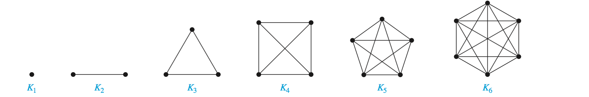
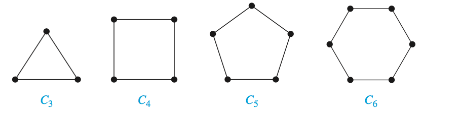
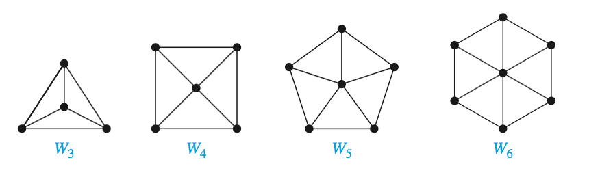
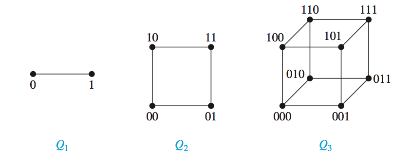
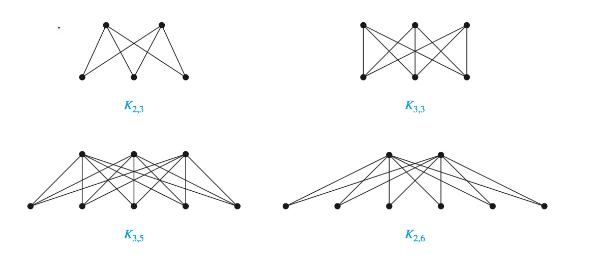

图定义
一个图 $G$ 由顶点（或结点）的非空集 $\mathbf V$ 和边集 $\mathbf E$ 构成，每条边有一个或两个顶点与它相连，这样的顶点称为边的端点。边连接它的端点。
- 环：把一个顶点连接自身的边
- 多重边：$m$ 条不同的边连接相同的两个顶点称为多重边，也可以说该边是一条多重度为 $m$ 的边
有向图
一个有向图 $(\mathbf V,\mathbf E)$ 由一个非空顶点集 $\mathbf V$ 和一个有向边集 $\mathbf E$ 组成。每条有向边与一个顶点有序对相关联。认为与有序对 $u,v)$ 相关的有向边开始于 $u$，结束于 $v$。
度
无向图中顶点的度
在无向图里顶点的度是与该顶点关联的边的数目，例外的情形是，顶点上的环算为度数加 2。顶点 $v$ 的度表示成 $deg(v)$。
无向图中顶点的度的性质
握手定理
设 $G=(\mathbf V,\mathbf E)$ 是有 $e$ 条边的无向图，则 $$2e=\sum_{v\in V}deg(v)$$
无向图有偶数个奇数度顶点
有向图中顶点的度
当 $(u,v)$ 是有向边时，说 $u$ 邻接到 $v$，顶点 $u$ 称为 $(u,v)$ 的起点，$v$ 称为 $(u,v)$ 的终点。环的起点和终点相同。
在有向图中，顶点 $v$ 的入度是以 $v$ 作为终点的边数，表示成 $deg^-(v)$，顶点 $v$ 的出度是以 $v$ 作为起点的边数，表示成 $deg^+(v)$.
设 $G=(\mathbf V,\mathbf E)$ 是带有向边的图。于是 $$\sum_{v\in V}deg^-(v)=\sum_{v\in V}deg^+(v)=\mid E\mid$$
子图
图 $G=(\mathbf V,\mathbf E)$ 的子图是图 $H=(\mathbf W,\mathbf F)$，其中 $\mathbf W\subseteq\mathbf F$ 而且 $\mathbf F\subseteq\mathbf E$。
并图
两个简单图 $G_1=(\mathbf V_1,\mathbf E_1)$ 和 $G_2=(\mathbf V_2,\mathbf E_2)$ 的并图是带有顶点集 $\mathbf V_1\cup\mathbf V_2$ 和边集 $\mathbf E_1\cup\mathbf E_2$ 的简单图。$G_1$ 和 $G_2$ 的并图表示成 $G_1\cup G_2$。
图的类型
| 类型 | 边 | 多重边 | 环 |
|---|---|---|---|
| 简单图 | 无向 | 否 | 否 |
| 多重图 | 无向 | 是 | 否 |
| 伪图 | 无向 | 是 | 是 |
| 有向图 | 有向 | 否 | 是 |
| 有向多重图 | 有向 | 是 | 是 |
| 混合图 | 有向 + 无向 | 是 | 是 |
因为图论在各个行业中广泛应用，不同行业之间术语有些差异。尽管图的术语可能差异很大，但有三个需要注意的地方：
- 图的边是无向还是有向，又或者两者皆有
- 是否存在多重边或多重有向边
- 是否存在环
一些特殊的简单图
完全图
$n$ 个顶点的完全图是在每对顶点之间都恰好有一条边的简单图。用 $K_n$ 表示。

圈图
圈图是由 $n$ 个顶点 $v_1,v_2,\dots,v_n$ 以及边 ${v_1,v_2},{v_2,v_3},\dots, {v_{n-1}, v_n},{v_n,v_1}$ 组成的。用 $C_n$ 表示。

轮图
当给圈图添加另一个顶点，并且把这个新顶点与圈图里 $n$ 个顶点逐个连接时，就得出轮图。用 $W_n$ 表示。

n 立方体图
$n$ 立方体图是用顶点表示 $2^n$ 个长度为 $n$ 的位串的图。两个顶点相邻当且仅当它们所表示的位串恰恰相差一位。 可以从 $n$ 立方图 $Q_n$ 来构造 $(n+1)$ 立方体图 $Q_{n+1}$，方法是建立 $Q_n$ 的两个副本，在 $Q_n$ 的一个副本的顶点标记前加 0，在 $Q_n$ 的另一个副本的顶点标记前加 1，并且加入连接那些标志只在第一位不同的两个顶点的边。

偶图
若把简单图 $G$ 的顶点集分成两个不相交的非空集合 $\mathbf V_1$ 和 $\mathbf V_2$，使得图的每一条边都连接着 $\mathbf V_1$ 里的一个顶点与 $\mathbf V_2$ 里的一个顶点。因此 $G$ 里没有边是连接着 $\mathbf V_1$ 里的两个顶点或 $\mathbf V_2$ 里的两个顶点。则 $G$ 称为偶图或者二分图。
判断简单图是偶图的准则
对图中的每个顶点赋以两种不同的颜色，而不让相邻接的顶点被赋以相同的颜色。
完全偶图
完全偶图 $K_{m,n}是顶点集分成分别含有 $m$ 和 $n$ 个顶点的两个子集的图。两个顶点之间有边当且仅当一个顶点属于第一个子集而另外一个顶点属于第二个子集。

度序列
一个图的度序列是由该图的各节点的度按递减顺序排列的序列。其中，如果一个序列是简单图的度序列，那么该序列是 成图 的
正则
若简单图每个顶点的度都相同，则这个图称为正则的。若正则图的每个顶点的度都为 $n$，则这个图称为 $n$ 正则。